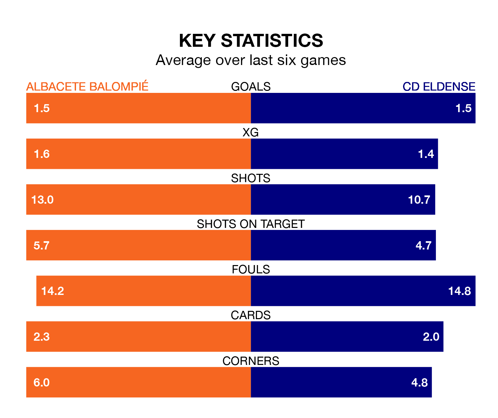

Albacete Balompié are heavy favourites to keep all three points at home in Tuesday's late kick-off against CD Eldense.
Albacete Balompié, who sit 16th in the Segunda División with 20 games played, are priced at 1.5 to seal victory at the Estadio Carlos Belmonte.
Despite sitting one place and one point ahead of them in the table, Eldense are 5.5 to win with *Betting Company*, while the draw is at 3.6.
With 26 goals in 20 games so far this season, Eldense are scoring more than average in the league with 1.3 goals per game. But they are conceding more than average too, letting in 31 goals at a rate of 1.6 per game.
Albacete, meanwhile, are average scorers, with 1.2 goals per game. They have conceded 1.5 goals per game.
Albacete Balompié are in mixed form in the Segunda División, with two wins and two draws from their last six games.
With a win and three draws over that period, CD Eldense's form is slightly worse – they have taken six points from 18, compared to the home side's eight.
Albacete's Manuel Fuster Lázaro is among the league's most creative players, racking up five assists in 20 appearances so far this season, and holding fourth spot in the Segunda División's assist charts.
For the visitors, José Antonio Abad Martínez, Sergio Ortuño Díaz and Marc Mateu Sanjuán have set up the most goals, having laid on four assists apiece to date.
Albacete's last match was on Saturday, a 2-0 loss against Mirandés.
Eldense drew 3-3 with Racing Santander last time out, also on Saturday, with Mario Soberón Gutiérrez (two) and Cristian Montes López on the scoresheet.
